library(ggplot2)
data("mpg")Plotting with Matplotlib and Seaborn
Learning Objectives
- Data visualization with seaborn and matplotlib
- Chapter 4 of Python Data Science Handbook.
Python Overview
| In R I Want | In Python I Use |
|---|---|
| Base R | numpy |
| dplyr/tidyr | pandas |
| ggplot2 | matplotlib/seaborn |
Import Matplotlib and Seaborn, and Load Dataset
R
All other code will be Python unless otherwise marked.
import pandas as pd
import numpy as np
import matplotlib.pyplot as plt
import seaborn as sns
mpg = r.mpgShow and clear plots.
Use
plt.show()to display a plot.Use
plt.clf()to clear a figure when making a new plot.
One Quantitative Variable: Histogram
sns.histplot()makes a histogram.sns.histplot(x='hwy', data=mpg) plt.show()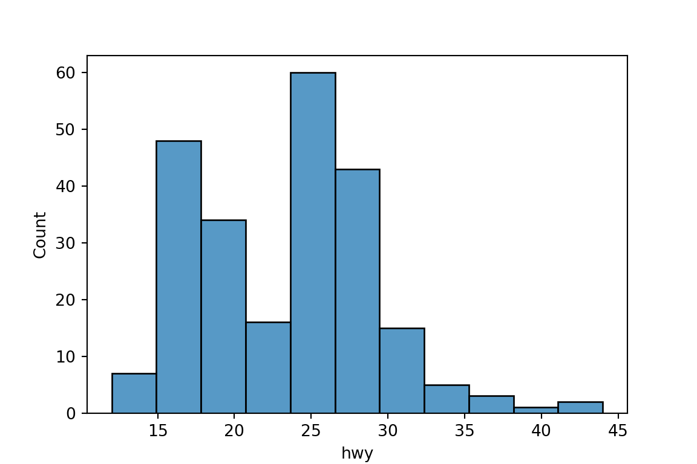
plt.clf()
One Categorical Variable: Barplot
Use
sns.countplot()to make a barplot to look at the distribution of a categorical variable:sns.countplot(x='class', data=mpg) plt.show()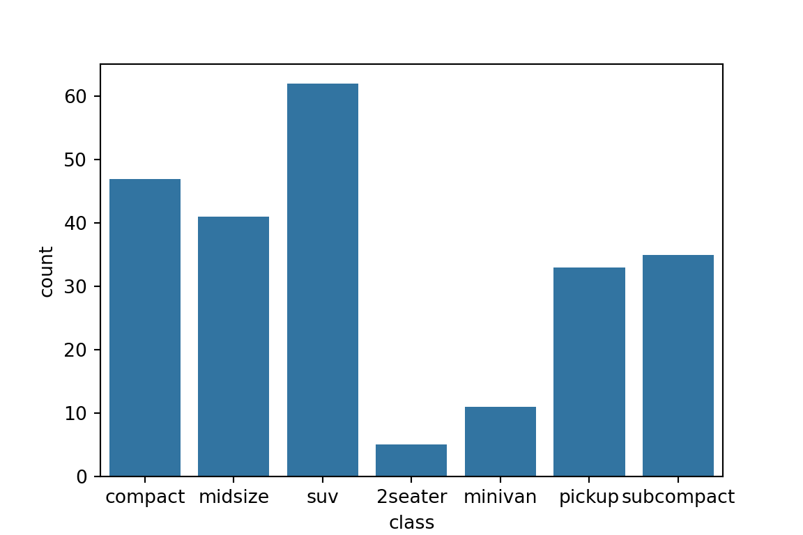
plt.clf()
One Quantitative Variable, One Categorical Variable: Boxplot
Use
sns.boxplot()to make boxplots:sns.boxplot(x='class', y='hwy', data=mpg) plt.show()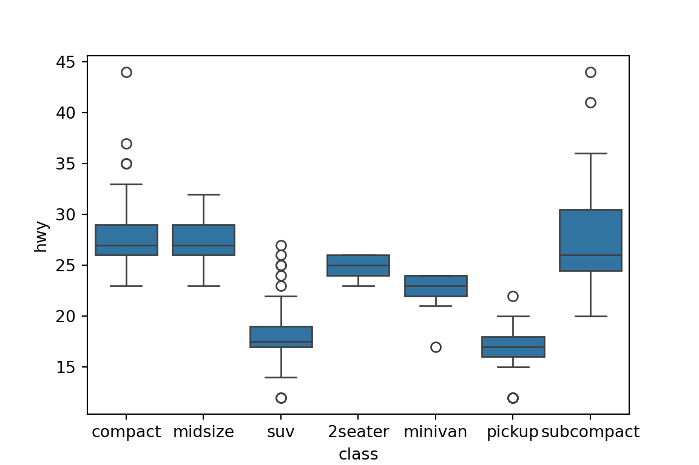
plt.clf()
Two Quantitative Variables: Scatterplot
Use
sns.scatterplot()to make a basic scatterplot.sns.scatterplot(x='displ', y='hwy', data=mpg) plt.show()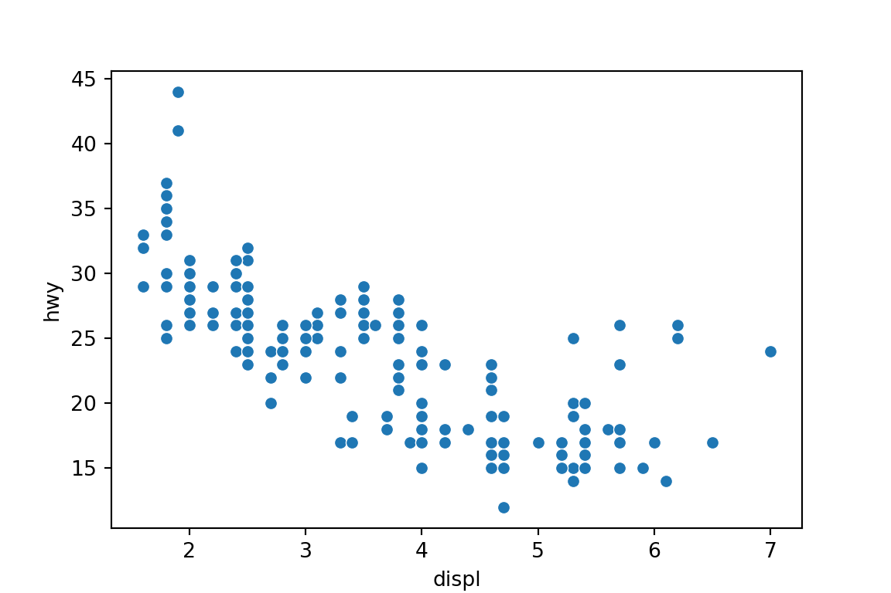
plt.clf()
Lines/Smoothers
Use
sns.regplot()to make a scatterplot with a regression line or a loess smoother.Regression line with 95% Confidence interval
sns.regplot(x='displ', y='hwy', data=mpg) plt.show()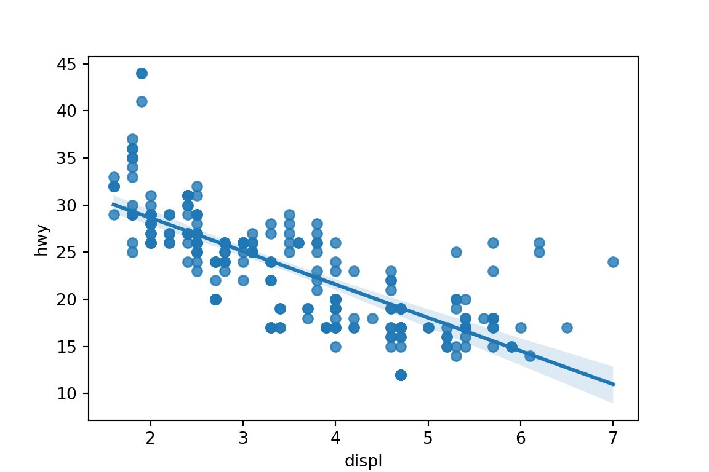
plt.clf()Loess smoother with confidence interval removed.
sns.regplot(x='displ', y='hwy', data=mpg, lowess=True, ci='None') plt.show()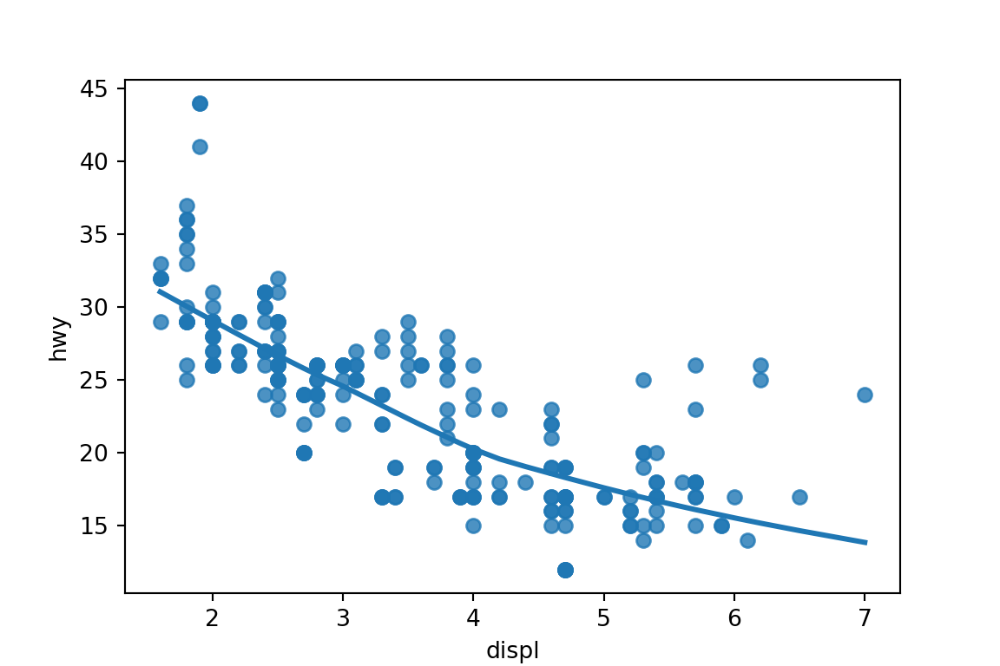
plt.clf()
Annotating by Third Variable
Use the
hueorstylearguments to annotate by a categorical variable:sns.scatterplot(x='displ', y='hwy', hue='class', data=mpg) plt.show()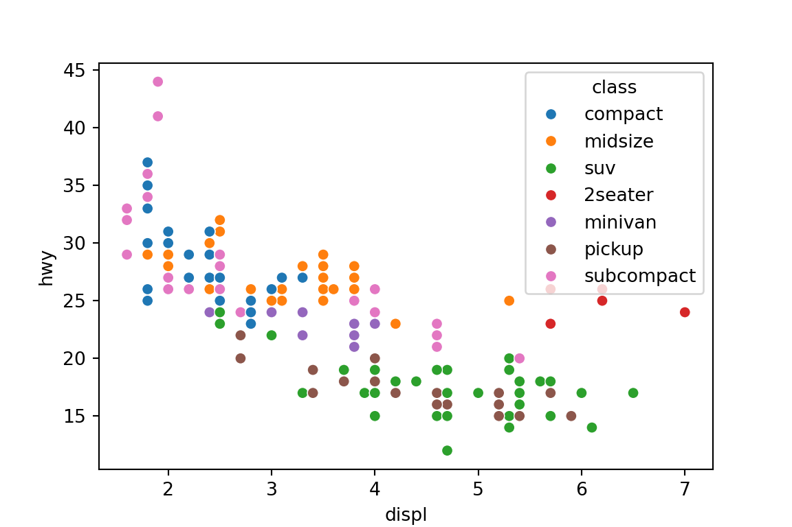
plt.clf()sns.scatterplot(x='displ', y='hwy', style='class', data=mpg) plt.show()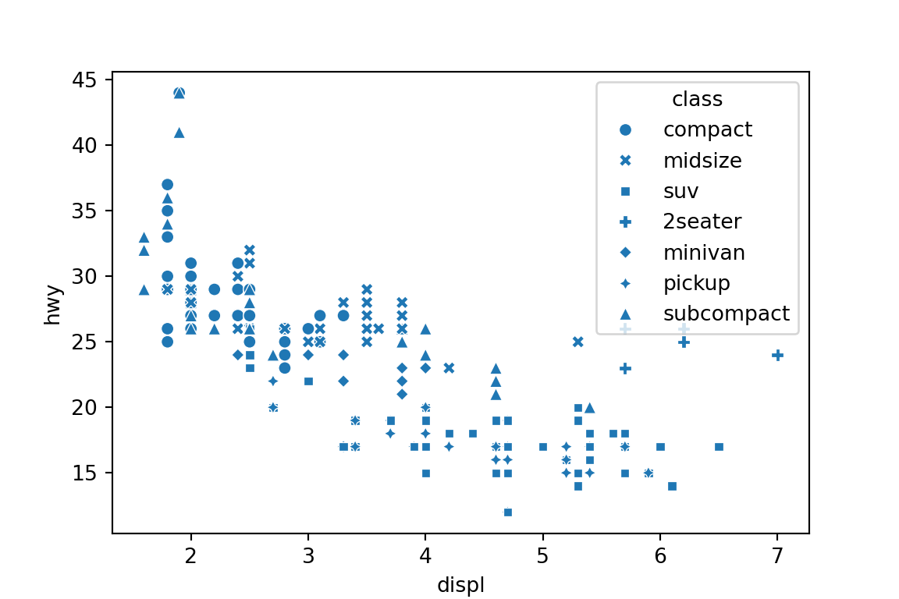
plt.clf()Use the
hueorsizearguments to annotate by a quantitative variable:sns.scatterplot(x='cty', y='hwy', hue='displ', data=mpg) plt.show()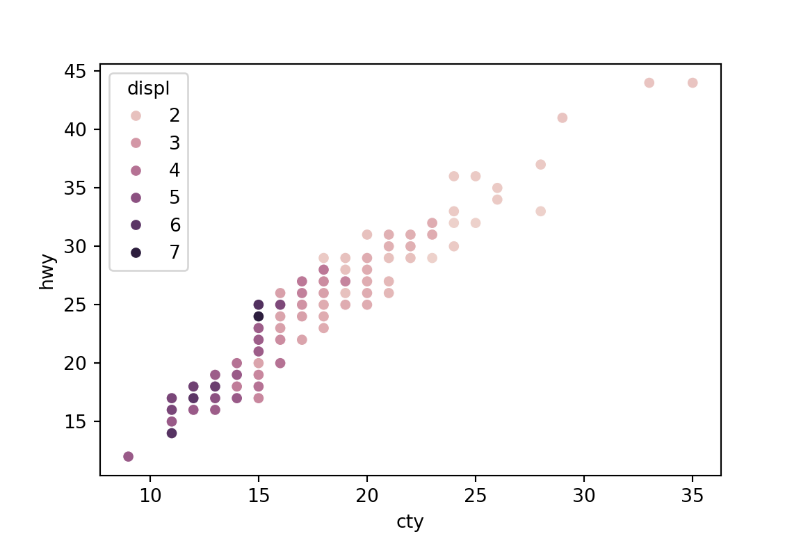
plt.clf()sns.scatterplot(x='cty', y='hwy', size='displ', data=mpg) plt.show()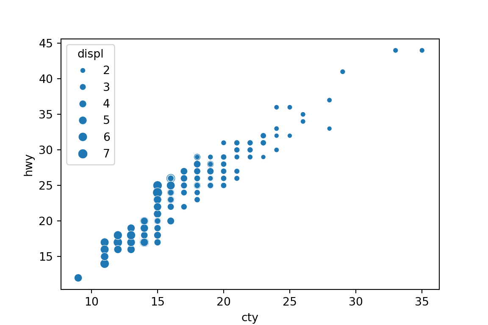
plt.clf()
Two Categorical Variables: Mosaic Plot
Usually, you should just show a table of proportions when you have two categorical variables.
pd.crosstab(mpg['class'], mpg['drv'], normalize='all')drv 4 f r class 2seater 0.000000 0.000000 0.021368 compact 0.051282 0.149573 0.000000 midsize 0.012821 0.162393 0.000000 minivan 0.000000 0.047009 0.000000 pickup 0.141026 0.000000 0.000000 subcompact 0.017094 0.094017 0.038462 suv 0.217949 0.000000 0.047009pd.crosstab(mpg['class'], mpg['drv'], normalize='index')drv 4 f r class 2seater 0.000000 0.000000 1.000000 compact 0.255319 0.744681 0.000000 midsize 0.073171 0.926829 0.000000 minivan 0.000000 1.000000 0.000000 pickup 1.000000 0.000000 0.000000 subcompact 0.114286 0.628571 0.257143 suv 0.822581 0.000000 0.177419pd.crosstab(mpg['class'], mpg['drv'], normalize='columns')drv 4 f r class 2seater 0.000000 0.000000 0.20 compact 0.116505 0.330189 0.00 midsize 0.029126 0.358491 0.00 minivan 0.000000 0.103774 0.00 pickup 0.320388 0.000000 0.00 subcompact 0.038835 0.207547 0.36 suv 0.495146 0.000000 0.44
Facets
Use
sns.FacetGrid()followed by themap_dataframe()method to plot facets. You pass arguments to the plot (sns.histplot()orsns.scatterplot()etc) inside the map function.g = sns.FacetGrid(data=mpg, row='drv', col='class') g = g.map_dataframe(sns.histplot, x = 'hwy', kde=False) plt.show()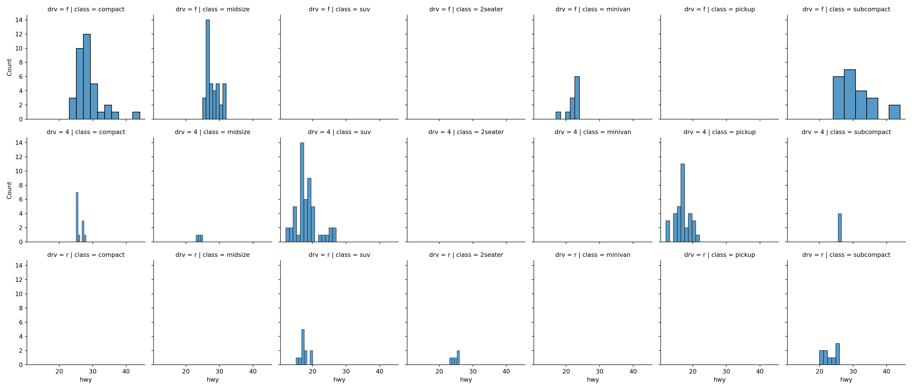
plt.clf()
Labels
Assign plot to an object. Then use the
set_*()methods to add labels.scatter = sns.scatterplot(x='displ', y='hwy', data=mpg) scatter.set_xlabel('Displacement') scatter.set_ylabel('Highway') scatter.set_title('Highway versus Displacement') plt.show()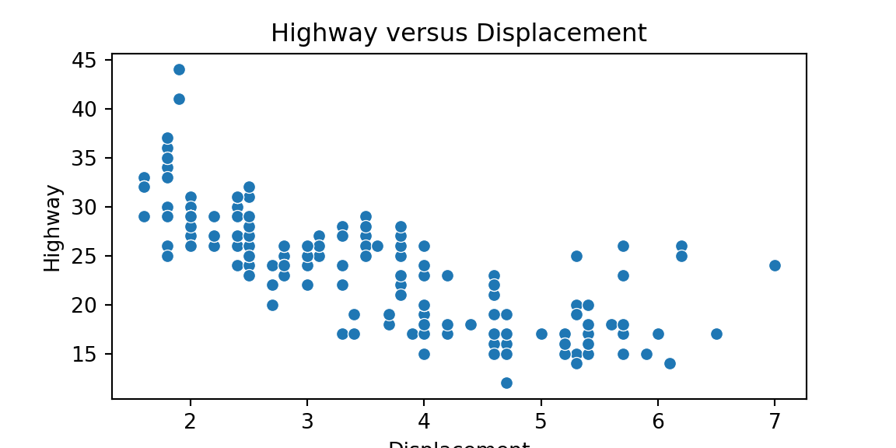
Saving Figures
First, assign a figure to an object.
scatter = sns.scatterplot(x='displ', y='hwy', data=mpg)Extract the figure. Assign this to an object.
fig = scatter.get_figure()Save the figure.
fig.savefig('./scatter.pdf')
You can do all of these steps using piping.
sns.scatterplot(x='displ', y='hwy', data=mpg) \ .get_figure() \ .savefig('./scatter.pdf')